About Me
What's up! I'm Nkwachukwu, but my preferred name is Nkwa I am a rising fifth-year undergrad at the University of Michigan-Ann Arbor studying Information Science, concentrating in User Experience Design, with a minor in Human-Centered Artifical Intelligence. My hometown is Detroit, MI; however, my family is from Nigeria. I chose Dublin for my summer adventure because I admire how the city has become so tech-driven since the 21st century. I was looking for a English-speaking country to study abroad in Europe and it just so happened that Ireland is the remaining English-speaking country left in the EU. In addition, it is my first time in Europe, which make this trip even more sweet after all.
This journal documents 21 days of exploring one of Europe's most storied cities, from its literary pubs to its windswept coastal paths.
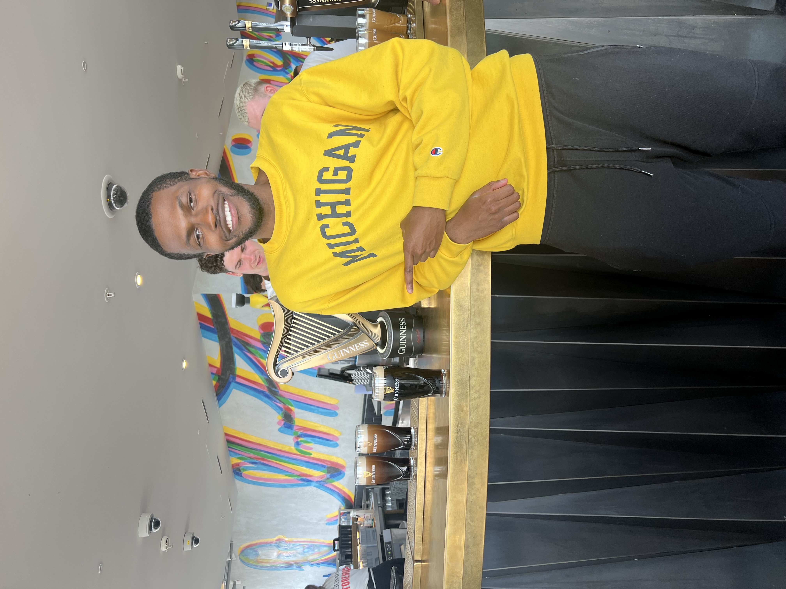
- 21 Days in Dublin
- ☘ Irish Adventures
- ∞ Memories Made
First Impressions
The city hit different than I expected. Here are a few snapshots from the first few days.
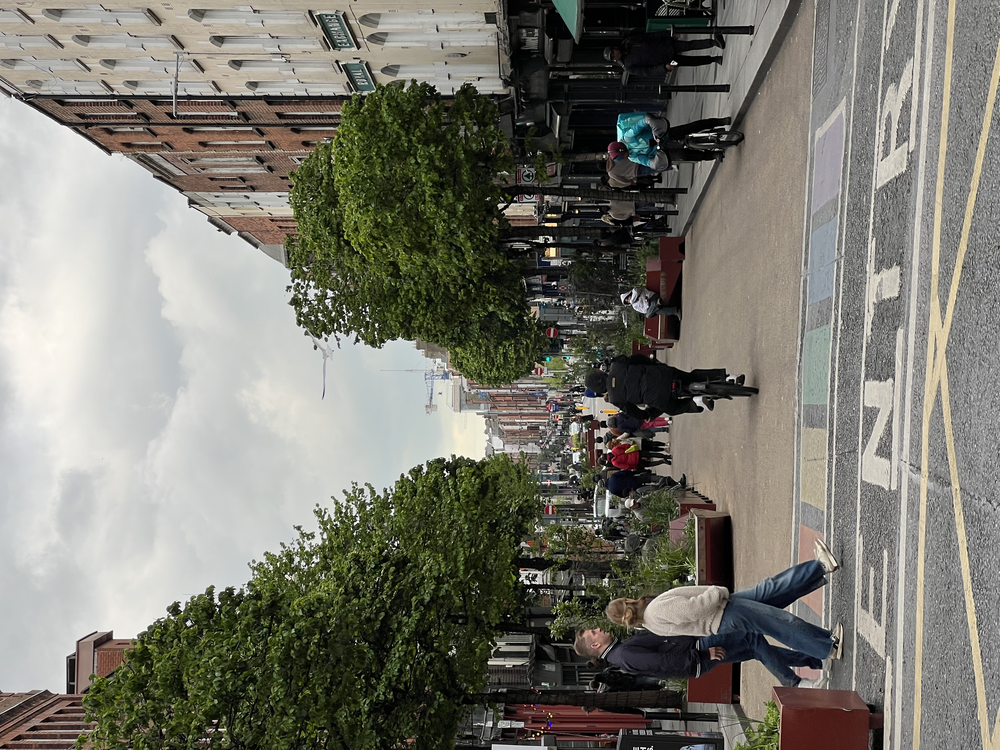


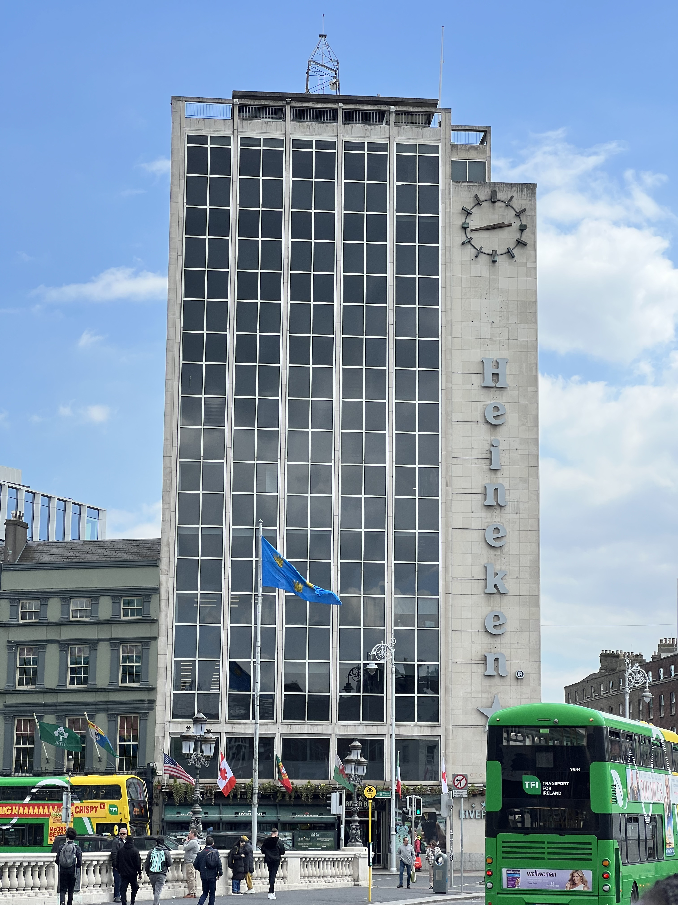
Photo Gallery
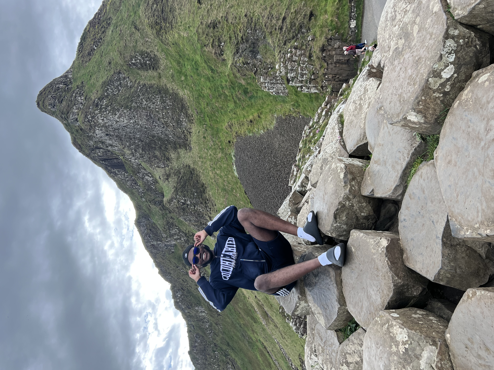
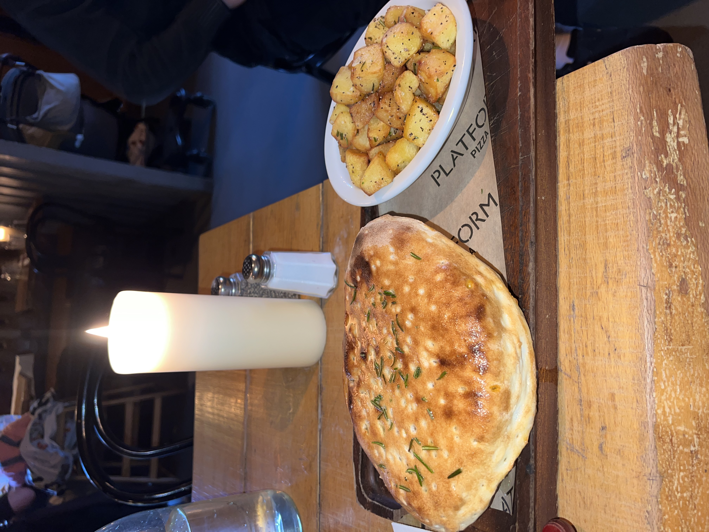
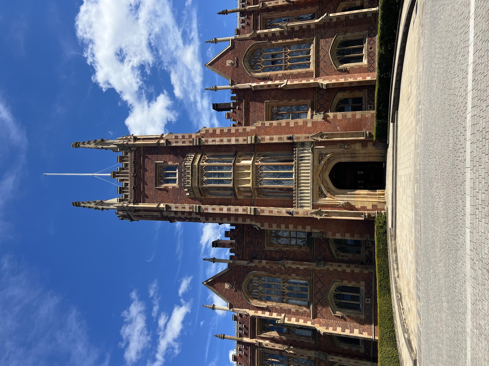
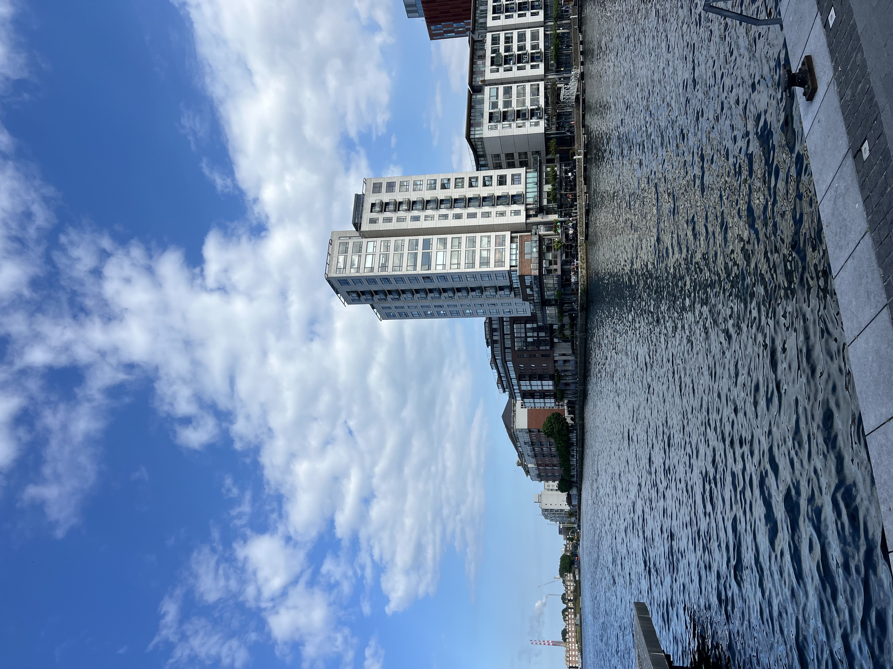

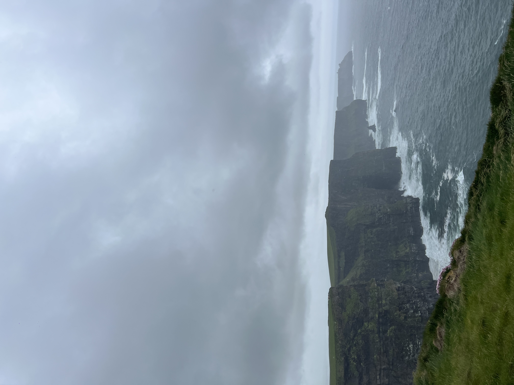
Around the City
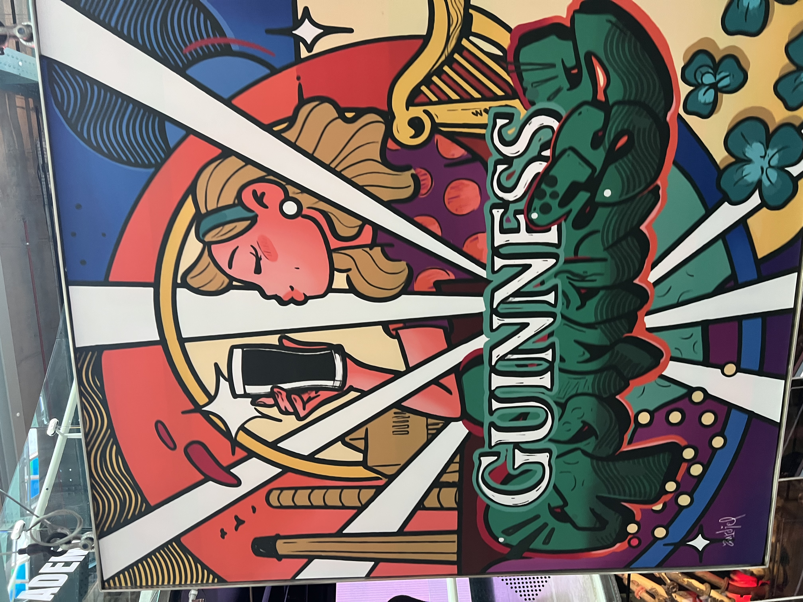
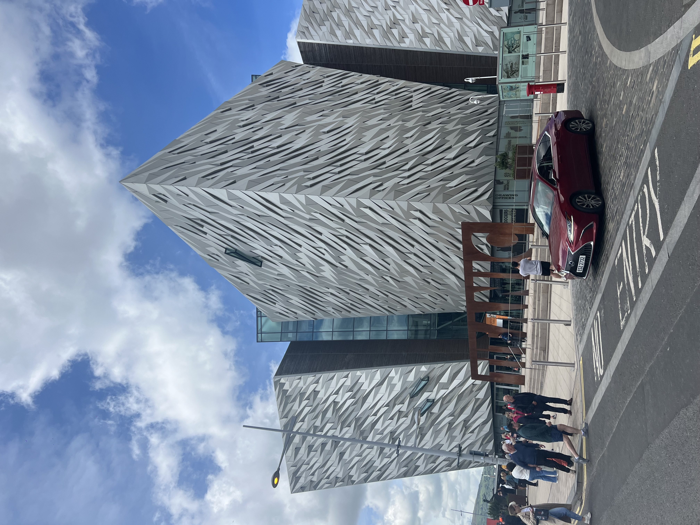
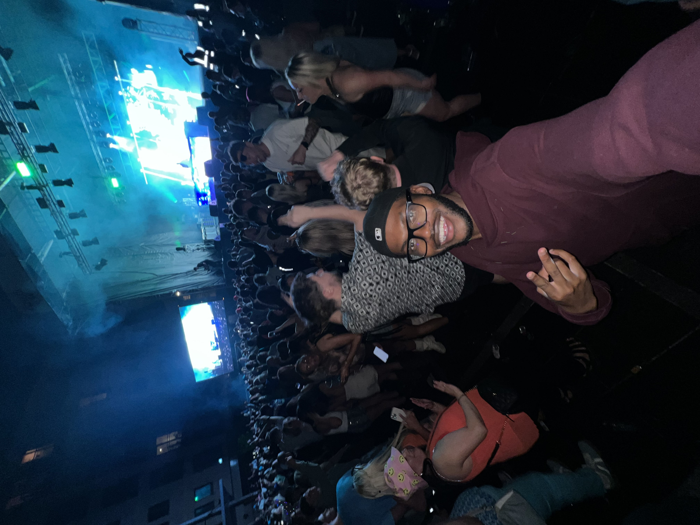
Inspiration Behind This Site
This site was inspired by my love for photography, as well as traveling. A lot of the places I explored were quite worthwhile and I am so grateful to collect of my content into a website for everyone to look for themselves.